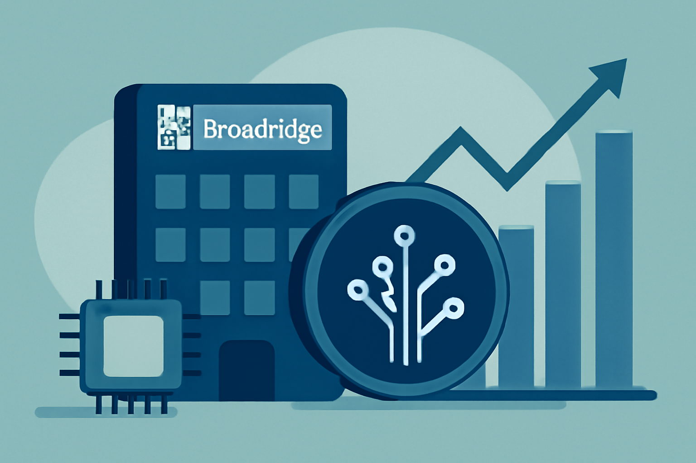
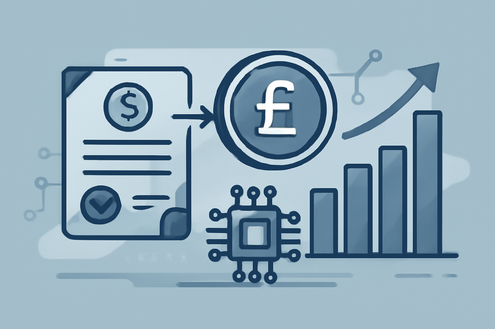
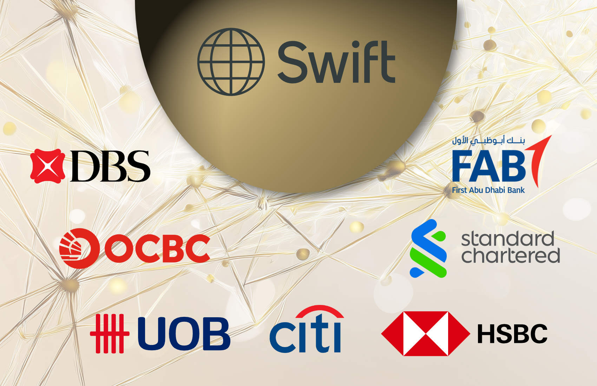
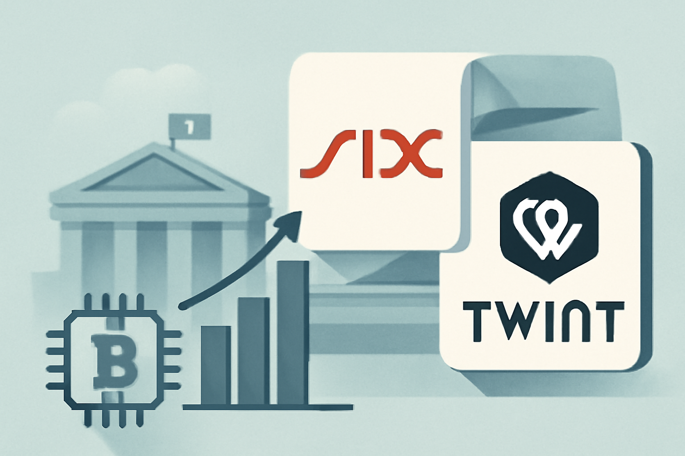
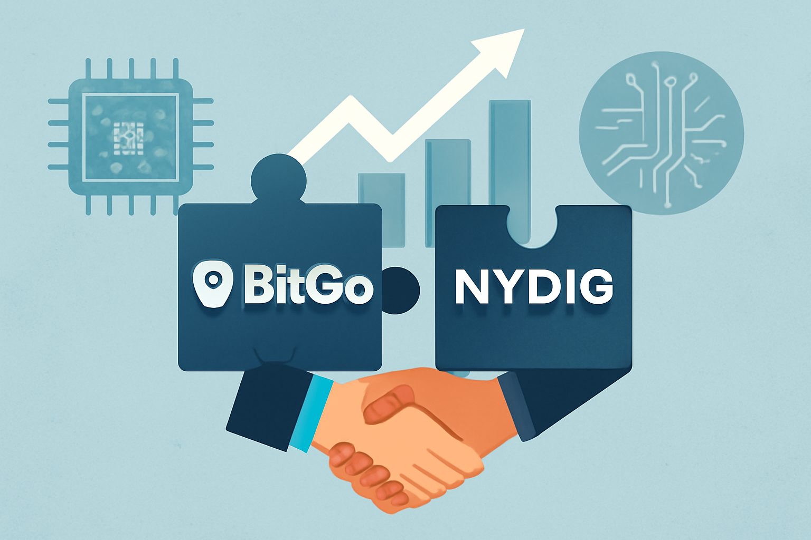
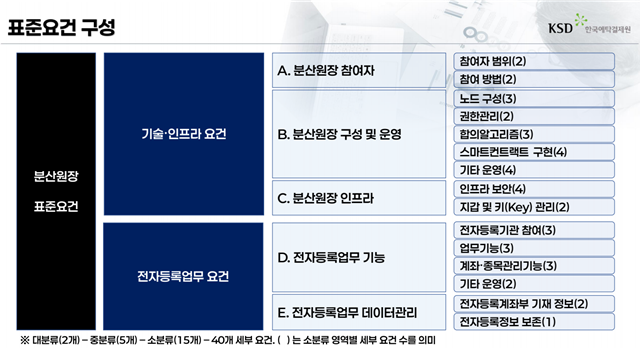

09 규제와 정책
금융위, 토큰증권 3단계 정책방향 공개
“금융위는 토큰증권만을 위한 별도 인가체계는 마련하지 않기로 했다.”
Weekly Digital Asset Brief
이번 주에는 토큰화 자산과 결제 인프라가 실제 운용 단계로 더 들어갔다. Broadridge는 토큰화 레포 범위를 G7 증권으로 넓혔고, BCP는 GBP 스테이블코인으로 디지털 채권 결제를 마쳤다. DBS와 Citi도 Swift Ledger로 주말 달러 지급을 처리하며, 토큰과 기존 지급망을 잇는 실무형 연결을 보여줬다. 국내에서는 금융위가 토큰증권 3단계 정책방향을 내놓았고, 해외 매체도 이를 곧바로 다뤘다. 제도는 한국에서 틀을 잡고, 해외 기관은 결제와 유통 실험을 앞당기는 흐름이다. 이번 주에는 한국의 제도 정리와 해외의 실제 거래 실험이 어떻게 맞물려 표준화 속도를 높이는지 살펴봐야 한다.

Editor's Pick
09 규제와 정책
“금융위는 토큰증권만을 위한 별도 인가체계는 마련하지 않기로 했다.”
10 규제와 정책
“South Korea’s financial regulator introduced a three-phase roadmap for the issuance of tok…”
01 자본시장 인프라
“Broadridge는 G7 증권을 네트워크에 넣고 국제 크로스보더 레포와 장중 레포, 담보 이동을 원자적 결제로 처리하겠다고 밝혔다.”
토큰증권과 디지털자산 수탁, 청산·결제와 예탁, 전자등록, CBDC와 예금토큰처럼 자본시장의 바탕을 이루는 제도와 시스템의 변화입니다.
01 Finextra 보도일 2026.09.02
Broadridge가 자사 분산원장 기반 레포 플랫폼의 대상을 G7 증권으로 넓혔다.
“Broadridge는 G7 증권을 네트워크에 넣고 국제 크로스보더 레포와 장중 레포, 담보 이동을 원자적 결제로 처리하겠다고 밝혔다.”

0102 Finextra 보도일 2026.09.02
BCP Technologies가 GBP 스테이블코인 tGBP를 써서 디지털 채권 거래를 결제했다고 밝혔다.
“BCP Technologies는 Archax의 토큰화 미국 국채 상품인 $GOVY 거래를 tGBP로 결제한 첫 사례를 마쳤다고 밝혔다.”

0203 Ledger Insights 보도일 2026.09.07
DBS와 Citi가 Swift Ledger를 써서 주말에 미국 달러 지급을 처리했다.
“DBS는 Citi와 주말에 미국 달러 거래를 처리했고, 기업 자금 담당자가 예금토큰을 전 세계로 24시간 365일 옮길 수 있는 속도 이점을 강조했다.”

0304 Markets Media 보도일 2026.09.08
Markets Media는 DBS와 Citi가 24시간 365일 국경 간 미국 달러 지급을 가능하게 했다고 전했다.
“주말 거래가 기관이 언제든 즉시 자금을 옮길 수 있는 방식을 보여줬다고 이 매체는 전했다.”
05 Ledger Insights 보도일 2026.09.08
인도 전력 부문 국영 대출기관 REC Limited가 토큰화 회사채 50억루피를 발행했다.
“초기 계획은 10억루피였지만 수요예측 주문이 거의 8배 모이자 그린슈 옵션을 써 50억루피 전액을 발행했다.”
기관 투자자의 참여, 상장지수상품의 승인과 출시, 수탁사·운용사의 사업 진출, 합작과 시범 사업처럼 시장의 구조가 바뀌는 사건입니다. 가격 움직임은 다루지 않습니다.
06 Forkast News 보도일 2026.09.08
USDC 발행사 Circle Internet Group이 싱가포르 결제사 Tazapay를 약 4억달러 규모의 전량 주식 거래로 인수하기로 했다.
“Tazapay는 연환산 결제 규모 250억달러와 60곳이 넘는 은행·핀테크 파트너망을 Circle에 더한다.”
07 Finextra 보도일 2026.09.08
스위스 거래소 SIX와 모바일 결제 서비스 Twint가 주요 은행 6곳이 추진하는 CHF 스테이블코인 사업에 참여했다.
“원문 발췌에는 SIX와 Twint가 스위스 은행들의 CHF 스테이블코인 구상에 합류했다는 사실만 나온다.”

0708 Finextra 보도일 2026.09.02
디지털 자산 인프라 기업 BitGo Holdings가 NYDIG의 기관 트레이딩 사업과 관련 자산을 인수했다.
“BitGo Holdings가 NYDIG의 기관 트레이딩 사업과 관련 자산을 인수하는 계약을 맺고 거래를 완료했다.”

08법령과 시행령, 감독지침, 과세와 회계, 인가와 제재 등 국내외 당국이 확정한 규칙의 변화입니다.
09 금융위원회 보도일 2026.09.04
금융위원회(이하 금융위)가 토큰증권 정책방향을 내놨다.
“금융위는 토큰증권만을 위한 별도 인가체계는 마련하지 않기로 했다.”

0910 Cointelegraph 보도일 2026.09.04
Cointelegraph가 한국 금융당국의 토큰증권 로드맵을 짧게 전했다.
“South Korea’s financial regulator introduced a three-phase roadmap for the issuance of tokenized assets, as pa…”